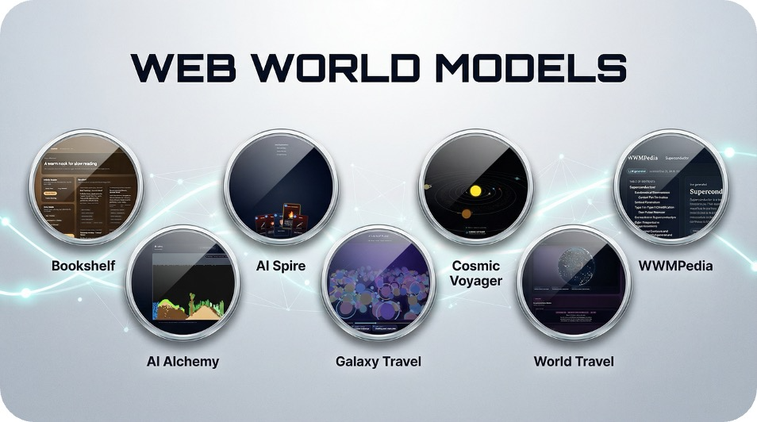
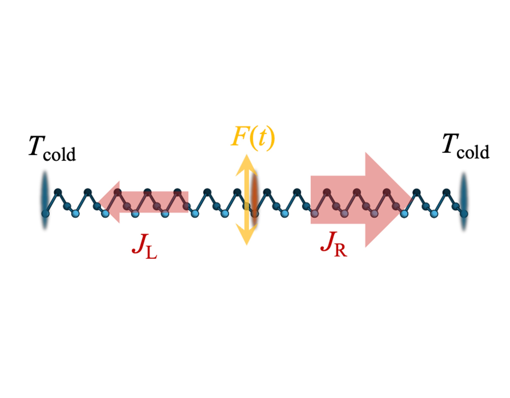
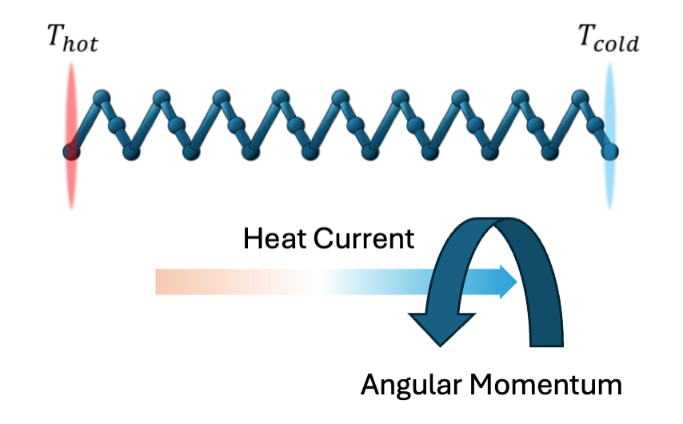

I am a Ph.D. student in the Department of Chemistry at the University of Pennsylvania, advised by Prof. Joseph E. Subotnik and Prof. Abraham Nitzan. Following Prof. Subotnik’s move to Princeton University, I remain enrolled at the University of Pennsylvania and am also a non-degree trailing student at Princeton, where I have served as a Research Assistant in his group.
My research is broadly in theoretical chemical physics and non-equilibrium dynamics in chiral molecular systems (e.g., chiral vibrational modes, vibrational energy transport, and angular-momentum generation under driving). I’m also interested in AI-for-science and building computational systems that help scientists reason and explore.
University of Pennsylvania — Ph.D. in Chemistry (Aug 2021–present).
University of Science and Technology of China (USTC) — B.S. in Physics (Sept 2017–Jun 2021).
Programming: C / MATLAB / Python / Julia
Scientific computing: LAMMPS; DFT; Quantum–Classical Dynamics
Interests: Nonadiabatic Dynamics; AI for science; Quantum information; Computational condensed matter physics
- Dec 2025: Preprint "Nuclear Angular Momentum Generation in Thermally Driven Chiral Systems" accepted to Phys. Rev. B.
- Dec 2025: "Web World Models" released on arXiv (2512.23676).
- Dec 2025: Journal article on "Rectification of Vibrational Energy Transfer in Driven Chiral Molecules" (J. Chem. Phys. 163(23)).
- Jul 2025: Journal article on "Chiral Vibrational Modes in Small Molecules" (J. Chem. Phys. 163(1)).
Click “abstract” / “bibtex” to expand. Click the paper title (or thumbnail) to open a short project-style page with images.
|  |
Jichen Feng, Yifan Zhang, Chenggong Zhang, Yifu Lu, Shilong Liu, Mengdi Wang arXiv preprint arXiv:2512.23676 (2025)
Abstract: Language agents increasingly require persistent worlds in which they can act, remember, and learn. Existing approaches sit at two extremes: conventional web frameworks provide reliable but fixed contexts backed by databases, while fully generative world models aim for unlimited environments, but the world is constructed primarily through generation, making it harder to maintain a fixed, deterministic global framework, reducing controllability. In this work, we introduce the Web World Model (WWM), a middle ground where world state and “physics” are implemented in ordinary web code to ensure logical consistency, while large language models generate context, narratives, and high-level decisions on top of this structured latent state. We build a suite of WWMs on a realistic web stack, including an infinite travel atlas grounded in real geography, fictional galaxy explorers, web-scale encyclopedic and narrative worlds, and simulation- and game-like environments. Across these systems, we identify practical design principles for WWMs: separating code-defined rules from model-driven imagination, representing latent state as typed web interfaces, and utilizing deterministic generation to achieve unlimited but structured exploration. Our results suggest that web stacks themselves can serve as a scalable substrate for world models, enabling controllable yet open-ended environments.
@misc{feng2025webworldmodels,
title = {Web World Models},
author = {Feng, Jichen and Zhang, Yifan and Zhang, Chenggong and Lu, Yifu and Liu, Shilong and Wang, Mengdi},
year = {2025},
eprint = {2512.23676},
archivePrefix= {arXiv},
primaryClass = {cs.AI},
url = {https://arxiv.org/abs/2512.23676}
}
|
|  |
Jichen Feng, Ethan Abraham, Joseph E. Subotnik, Abraham Nitzan The Journal of Chemical Physics 163(23): 234110 (2025)
Abstract: We show that the combination of molecular chirality and phase-controlled driving can lead to rectification of vibrational energy transfer. We demonstrate this effect using classical models of (1) a single helical chain and (2) a more realistic model of polyethylene double helix. We examine the effect of the driving frequency, polarization, and temperature on this phenomenon. Notably, we find that the direction and magnitude of the observed directionality preference depend on the driving frequency and phase, and that the effect persists at room temperature.
@article{feng2025rectification,
title = {Rectification of Vibrational Energy Transfer in Driven Chiral Molecules},
author = {Feng, Jichen and Abraham, Ethan and Subotnik, Joseph E. and Nitzan, Abraham},
journal = {The Journal of Chemical Physics},
year = {2025},
volume = {163},
number = {23},
pages = {234110},
doi = {10.1063/5.0299947},
url = {https://doi.org/10.1063/5.0299947}
}
|
|  |
Jichen Feng, Ethan Abraham, Joseph Subotnik, Abraham Nitzan arXiv preprint arXiv:2508.06738 (2025)
Abstract: The appearance of angular momentum in the nuclear motion of molecular systems lacking inversion symmetry under imposed thermal gradients presents a novel mechanism with potential implications for spintronics, magnetic response, and energy transport in such systems. Here we explore this phenomenon, using theoretical analysis and numerical simulations to study angular momentum generation in several driven chiral molecular models. We demonstrate that significant vibrational angular momentum can be induced under both mechanical and thermal driving, with magnitude comparable to that induced in optically driven chiral phonons. We find that generation of angular momentum is a common and general phenomenon in driven chiral structures, highlighting the role of symmetry-breaking in the (non-equilibrium) internal atomic motion of such systems.
@misc{feng2025nuclearangularmomentum,
title = {Nuclear Angular Momentum Generation in Thermally Driven Chiral Systems},
author = {Feng, Jichen and Abraham, Ethan and Subotnik, Joseph and Nitzan, Abraham},
year = {2025},
eprint = {2508.06738},
archivePrefix= {arXiv},
primaryClass = {physics.chem-ph},
url = {https://arxiv.org/abs/2508.06738}
}
|

|
Jichen Feng, Ethan Abraham, Joseph Subotnik, Abraham Nitzan The Journal of Chemical Physics 163(1): 014106 (2025)
Abstract: The development of quantitative methods for characterizing molecular chirality can provide an important tool for studying chirality-induced phenomena in molecular systems. Significant progress has been made in recent years toward understanding the chirality of molecular normal vibrational modes, mostly focusing on vibrations of helical molecular structures. In the present study, we examine the applicability of two methodologies previously used for helical structures for the quantification of the chirality of molecular normal modes across a range of small, not necessarily helical, molecules. The first approach involves the application of the Continuous Chirality Measure (CCM) to each normal mode by associating the mode with a structure formed by imposing the corresponding motion relative to a common origin. The second approach assigns to each normal mode a pseudoscalar defined as the product of atomic linear and angular momentum summed over all atoms. In particular, using the CCM also as a measure of the chirality of the underlying molecular structure, we establish the existence of a correlation between the chirality of molecular normal modes and that of the underlying molecular structure. Furthermore, we find that normal modes associated with different frequency ranges of the molecular vibrational spectrum exhibit distinct handedness behavior.
@article{feng2025chiralvibrationalmodes,
title = {Chiral Vibrational Modes in Small Molecules},
author = {Feng, Jichen and Abraham, Ethan and Subotnik, Joseph and Nitzan, Abraham},
journal = {The Journal of Chemical Physics},
year = {2025},
volume = {163},
number = {1},
pages = {014106},
doi = {10.1063/5.0271584},
url = {https://doi.org/10.1063/5.0271584}
}
|